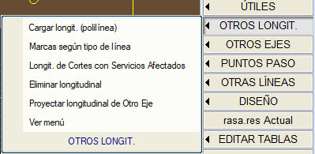
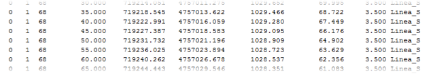
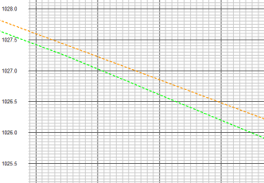
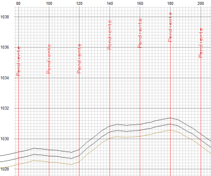
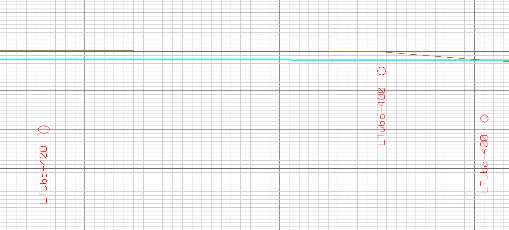

| |
|
KIRMIZI KOT: DİĞER BOYKESİTLER
|
Boykesitleri veya .lon uzantılı dosyaları yönetmek için farklı seçenekleri göreceğiz. Boykesiti Poligon Hat Olarak Yükle
Çizgi Tipine Göre İşaretler Etkilenen Altyapılarla Kesişim Boykesitleri Boykesiti Sil Diğer Eksenin Boykesitini Yansıt Menüyü Gör Bir .lon uzantılı dosya aşağıdaki sütunlara sahip olacaktır:

Not: Bir eksene en fazla 120 boykesit ilişkilendirebiliriz. BOYKESİTİ POLİGON HAT OLARAK YÜKLE Farklı boykesitleri poligon hat olarak yüklemeyi sağlar.  Bu poligon hatları bir paftada çizmek istememiz durumunda, boykesit potamızı yüklediğimiz .lon dosyası sayısı kadar veriyle tanımlamamız gerekecektir. ÇİZGİ TİPİNE GÖRE İŞARETLER Boykesiti, .lon dosyasının etiketini göstererek işaretler olarak yüklemeyi sağlar.  Bu işaretleri bir paftada çizmek istememiz durumunda, boykesit potamızı yüklediğimiz .lon dosyası sayısı kadar veriyle tanımlamamız gerekecektir. ETKİLENEN ALTYAPILARLA KESİŞİM BOYKESİTLERİ LONGI menüsünün "Etkilenen altyapılarla kesişim için boykesit" seçeneğiyle oluşturulmuş bir .lon dosyasını yüklemeyi sağlar. Gösterim, çizginin parametrik tanımını (QA) dikkate alacak ve kesişimi ilgili verev açısıyla temsil edecektir. Örneğin, dairesel bir boru olarak temsil edilen bir altyapı, eksene dik olmadığında bir elips oluşturacaktır:  BOYKESİTİ SİL Yüklediğimiz farklı boykesitleri tek tek silmeyi sağlar. DİĞER EKSENİN BOYKESİTİNİ YANSIT Başka bir eksenin bir .lon dosyasını seçer ve mevcut eksen üzerine yansıtır. Program, yansıtılan boykesiti arşivlemek için bir ad ister ve yansıtmanın mevcut eksene mi yoksa boykesitin geldiği eksene mi dik olmasını istediğimizi sorar. MENÜYÜ GÖR Kırmızı kotlar iletişim kutusunda, farklı boykesitleri yönetebileceğim bir alan açar. Birinin veya tümünün görüntülenmesini etkinleştirmeyi veya devre dışı bırakmayı, onları çizmek için bir renk veya çizgi tipi tanımlamayı, tiplerini değiştirmeyi, herhangi bir konumda diğer boykesitleri yüklemeyi veya kaldırmayı ve gözlemler eklemeyi sağlar. [->.gui] seçeneği ile bu tablonun bilgilerini, yüklediğimiz boykesitlerin daha sonra çizilmesi için bir potaya ekleyeceğiz.  Gözlemler metni, profilin başında ekranda gösterilir. [KM Ekle] seçeneği ile tüm aktif diğer boykesitleri değiştirebiliriz. Yüklenen verileri ve ayrıca .lon dosyasını değiştirir. Son olarak, [Çıkar] seçeneği, kırmızı kotu olduğu gibi olan ekseni hesaplar ve yüzey, taraf ve kod ile tanımlanmış bir noktanın altındaki arazi boykesitini oluşturur. Boykesiti Kırmızı Kotlar menüsünde görüntülemenin yanı sıra, örn. Arazi_E1_Y68S601.lon (Eksen 1 Yüzey 68 Sağ Taraf kod 601) gibi bir dosya oluşturur. Bu dosya, daha sonra boykesitle çizmek için bu aynı menüde boykesit olarak yüklenebilir. |